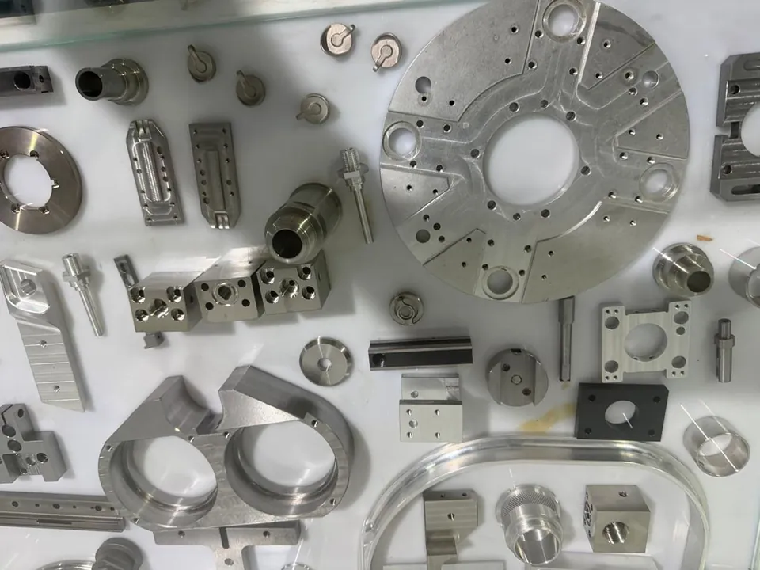
Swiss precision
meets Asian manufacturing.Schweizer Präzision
trifft asiatische Fertigung.
meets Asian manufacturing.Schweizer Präzision
trifft asiatische Fertigung.
Your drawing.
Our network.
Your solution.
Ihre Zeichnung.
Unser Netzwerk.
Ihre Lösung.
Your partner for quality & reliabilityIhr Partner für Qualität & Zuverlässigkeit
Don't just source cheaper.
Source better.Nicht nur günstiger beschaffen.
Besser beschaffen.
SwissTech links industrial companies across the DACH region with vetted manufacturers in Vietnam. We steer your project from technical clarification and supplier allocation through sampling and production to delivery.SwissTech verbindet Industrieunternehmen im DACH-Raum mit geprüften Herstellern in Vietnam. Wir steuern Ihr Projekt von der technischen Klärung und Lieferantenzuteilung über Bemusterung und Produktion bis zur Lieferung.
EuropeEuropaOur
customersUnsere
Kunden
customersUnsere
Kunden
VietnamVetted
manufacturersGeprüfte
Hersteller
manufacturersGeprüfte
Hersteller
Product rangeLeistungsspektrum
Our Manufacturing CapabilitiesUnsere Fertigungskompetenzen
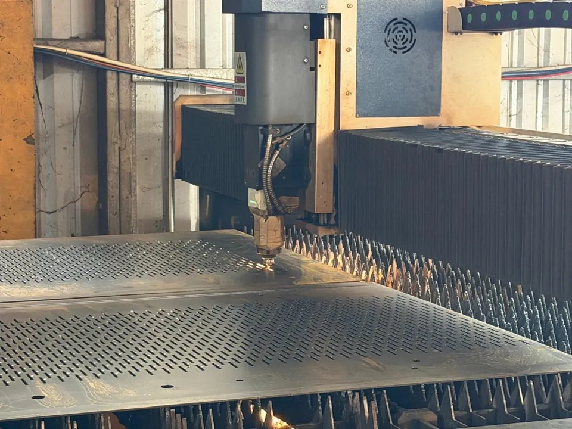
Sheet Metal & FormingBlech & Umformung
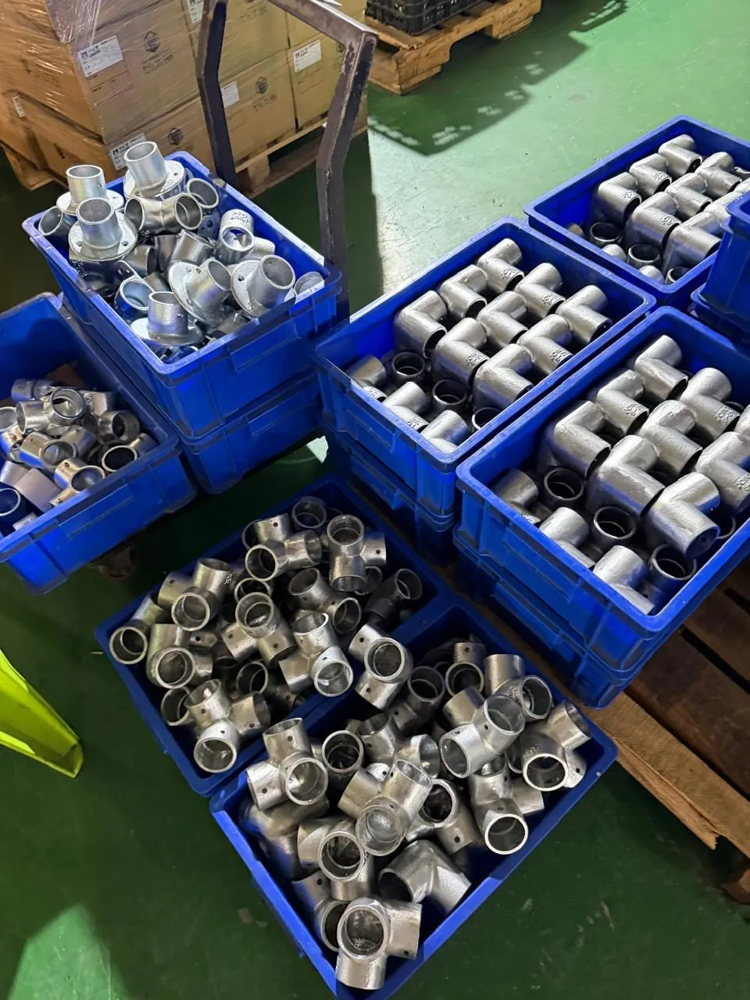
Assemblies and Fastening ElementsBaugruppen und Befestigungselemente
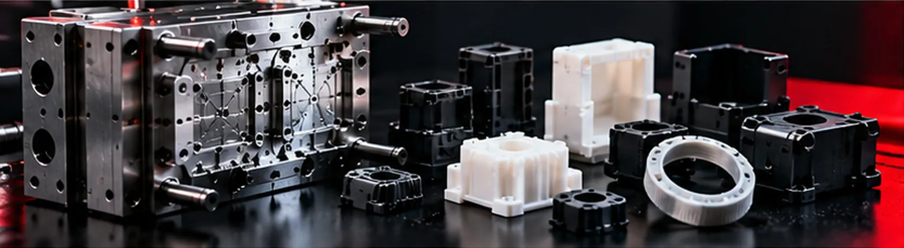
Plastics & ToolingKunststoff & Werkzeuge
AlsoDarüber hinaus
We take on cost optimisation and design-for-manufacturing improvements to your existing parts and products.Wir übernehmen Kostenoptimierung und fertigungsgerechte Anpassung bestehender Bauteile und Produkte.
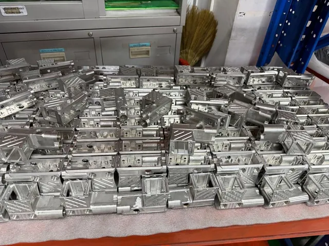
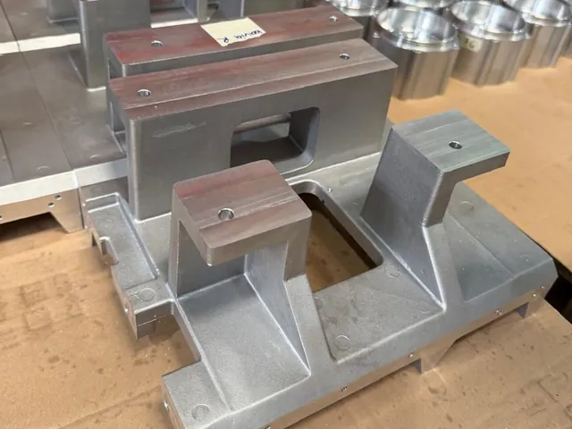
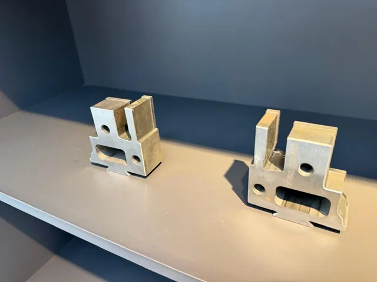
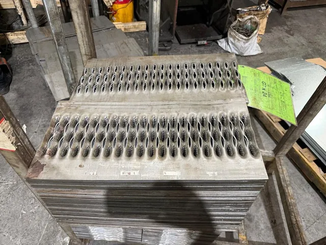
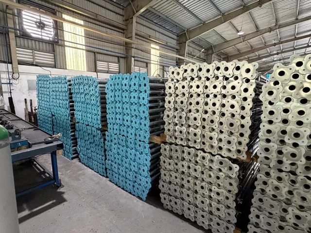
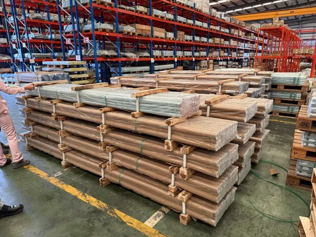
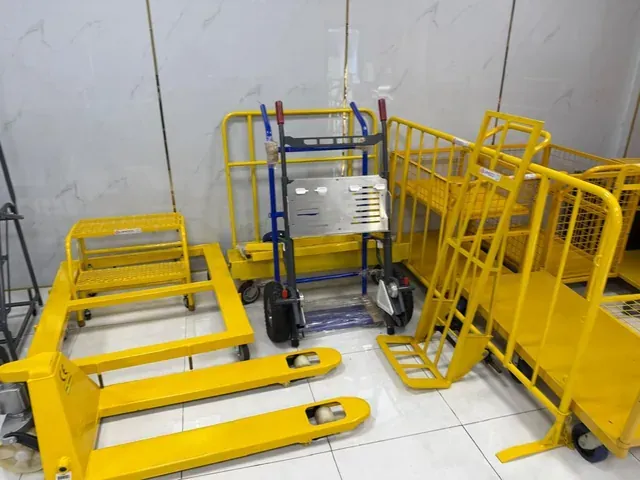
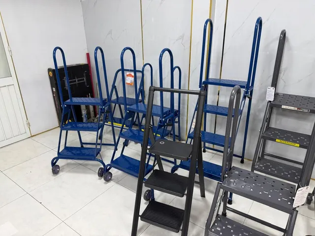
You define the requirements. We make them happen.Sie definieren die Anforderungen. Wir setzen sie um.
Eight clearly defined steps, from enquiry to delivery.Acht klar definierte Schritte, von der Anfrage bis zur Lieferung.
01EnquiryAnfrage
02Technical ClarificationTechnische Klärung
03Supplier AllocationLieferantenzuteilung
04QuotationAngebot
05SamplingBemusterung
06Quality ControlQualitätssteuerung
07ProductionProduktion
08DeliveryLieferung
We have selected every manufacturer that we have vetted and approved on site according to strict, measurable technical, commercial and quality-related selection criteria.Jeden durch uns vor Ort geprüften und genehmigten Hersteller haben wir nach strengen und messbaren technischen, kaufmännischen und qualitätsbezogenen Auswahlkriterien selektioniert.
The selection was based on multi-stage due diligence which included, among other steps: capability assessments, company and background checks, sample testing, obtaining references from customers and business partners, factory visits, and meetings with management and the engineering teams.Grundlage für die Selektion war eine mehrstufige Due-Diligence-Prüfung, welche u.a. folgende Schritte beinhaltete: Fähigkeitsanalysen, Firmen- und Hintergrundchecks, Musterprüfungen, Einholen von Referenzen von Kunden und Geschäftspartnern, Werksbesuche sowie Gespräche mit Geschäftsleitung und den technischen Teams.
Manufacturers that passed this assessment were added to our list of trusted partners. We re-assess them on an ongoing basis to ensure that the original selection criteria are always met.Hersteller, die diese Prüfung bestanden hatten, haben wir in unsere Liste vertrauenswürdiger Partner aufgenommen und beurteilen sie laufend neu, um sicherzustellen, dass die anfänglichen Auswahlkriterien stets erfüllt sind.
Our priority is not the lowest quote, but robust, reliable, long-term business relationships.Uns geht es nicht prioritär um das günstigste Angebot, sondern um belastbare, zuverlässige, langfristige Geschäftsbeziehungen.
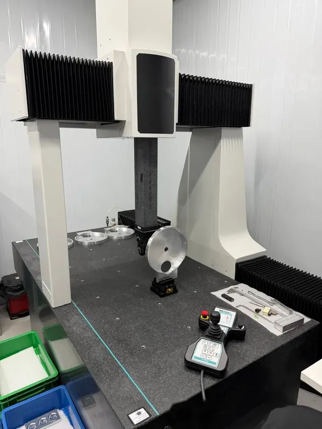
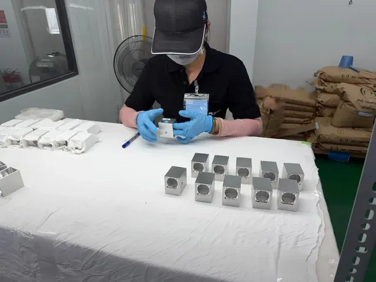
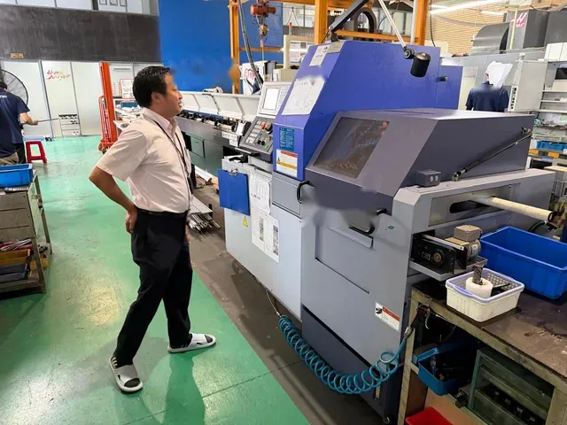
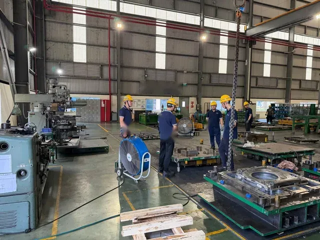
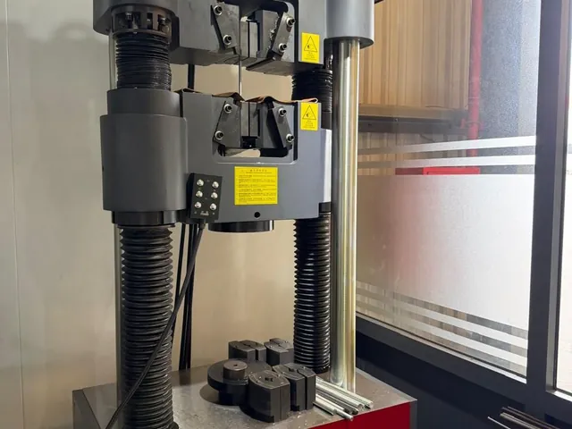
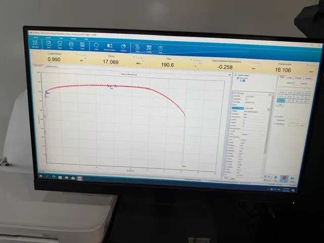
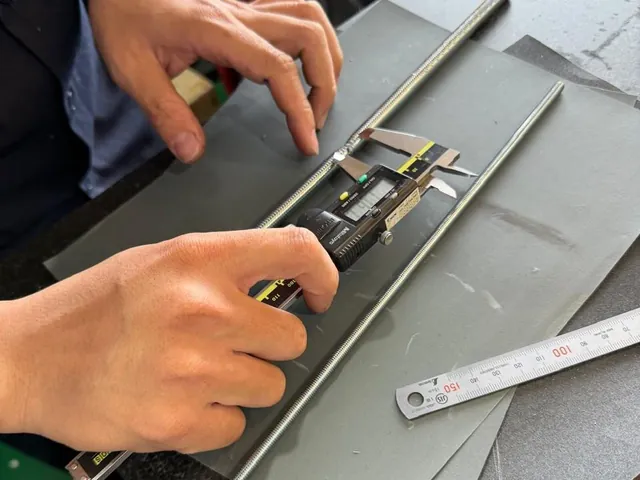
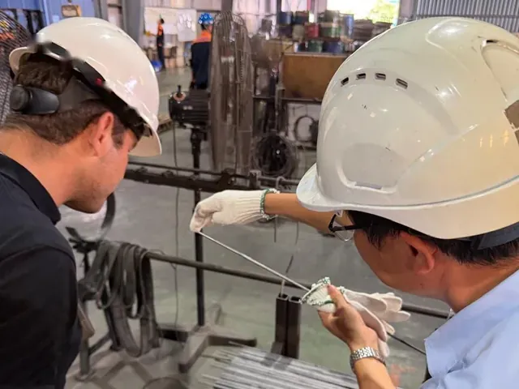
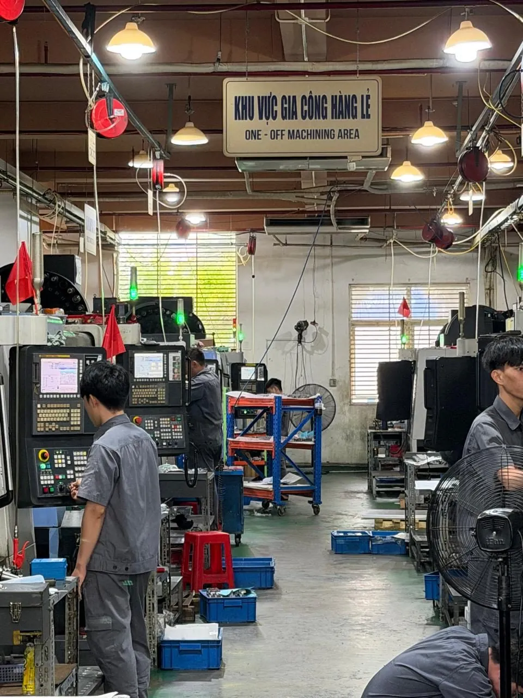
Sourcing regionBeschaffungsregion
Why Vietnam?Warum Vietnam?
Industrial. Competitive. Connected.Industriell. Wettbewerbsfähig. Vernetzt.
Vietnam has become a serious manufacturing location. SwissTech makes it accessible to Swiss and European customers.Vietnam hat sich zu einem ernst zu nehmenden Industriestandort entwickelt. SwissTech macht ihn für Schweizer und europäische Kunden zugänglich.
Growing Industrial BaseWachsende IndustriebasisTop technical standards and close ties to global supply chains.Höchste technische Standards und enge Verflechtung mit globalen Lieferketten.
Competitive ManufacturingWettbewerbsfähige FertigungAttractive pricing for components and production runs.Attraktive Preise für Komponenten und Serien.
Supply Chain DiversificationDiversifizierte LieferkettenAn additional source alongside your existing suppliers.Eine weitere Bezugsquelle neben Ihren bestehenden Lieferanten.
Why SwissTech?Warum SwissTech?
Swiss Point of ContactAnsprechpartner in der SchweizOne contact for the entire DACH regionEine Anlaufstelle für den gesamten DACH-Raum
Local PresencePräsenz vor OrtOrder handling and logistics in VietnamAbwicklung und Logistik in Vietnam
Technical Know-howTechnisches VerständnisWe understand your drawings and manufacturing specificationsWir verstehen Ihre Zeichnungen und Fertigungsvorgaben
Hand-picked SpecialistsAusgewählte SpezialistenNo endless search, only the best in their fieldKeine endlose Suche, nur die Besten ihres Fachs
One Team, Start to FinishAlles aus einer HandFrom first enquiry to final deliveryVon der ersten Anfrage bis zur Lieferung
PRECISION • QUALITY • RELIABILITYPRÄZISION • QUALITÄT • ZUVERLÄSSIGKEIT
IndustriesBranchen
Our CustomersUnsere Kunden
Our customers are mainly SMEs in the DACH region, working in the MEM sector (machinery, electrical and metal industries), building and installation technology, tool and mould making, plastic injection moulding and injection-mould making, or in the manufacture of special parts for the foundry industry.Unsere Kunden sind vorwiegend KMU im DACH-Raum. Sie sind in der MEM-Branche (Maschinen-, Elektro- und Metallindustrie), der Gebäude- und Installationstechnik, im Werkzeug- und Formenbau, im Kunststoff-Spritzguss und Spritzguss-Formenbau oder in der Herstellung von Spezialteilen für die Giesserei-Industrie tätig.
Does one of these descriptions apply to your company?Trifft eine dieser Beschreibungen auf Ihr Unternehmen zu?
You buy semi-finished and finished products in metal, plastic or other materials, such as threaded rods, threaded tubes, pipe clamps, and parts in various metals or other materials that are CNC-machined, turned, welded, brazed, drilled, stamped, honed, formed or otherwise worked.Sie beziehen Halb- und Fertigfabrikate aus Metall, Kunststoff oder anderen Materialien, wie zum Beispiel Gewindestangen, Gewinderohre, Rohrschellen, Teile aus diversen Metallen oder anderen Werkstoffen, die CNC-bearbeitet, gedreht, geschweisst, gelötet, gebohrt, gestanzt, gehont, umgeformt oder anderweitig bearbeitet werden.
This also includes mould making for injection moulding, injection-moulded plastic parts and special parts for the foundry industry in various metals and materials, as well as products for the construction industry, such as scaffolding and barriers.Auch Formenbau für den Spritzguss, gespritzte Kunststoffteile und Spezialteile für die Giesserei-Industrie in verschiedenen Metallen und Werkstoffen sowie Produkte für die Bauwirtschaft, wie Baugerüste und Absperrungen, gehören dazu.
And you are looking for a way to have components and assemblies manufactured, to improve existing parts and products, or to build prototypes.Und Sie suchen eine Lösung für die Fertigung von Komponenten und Baugruppen, die Überarbeitung bestehender Teile und Produkte oder den Bau von Prototypen.
BenefitsVorteile
Your BenefitsIhre Vorteile
You focus on your core business; we handle procurement. You save time, effort and money, and your margin improves noticeably.Sie konzentrieren sich auf Ihr Kerngeschäft, wir übernehmen die Beschaffung. So sparen Sie Zeit, Aufwand und Geld und verbessern Ihre Marge spürbar.
We have selected the leading manufacturers in each field, mainly in Vietnam, and steer the process between you and these “best-of-breed” producers.Vorwiegend in Vietnam haben wir die führenden Hersteller ihres Fachs ausgewählt und steuern den Prozess zwischen Ihnen und diesen «Best-of-Breed»-Betrieben.
Vietnam has a vast number of industrial companies; the cultural gap to Europe is wide and the language barrier high. Finding the right producer demands time, technical know-how and an understanding of the local market. We have already searched for that needle in the haystack, so you do not have to.Vietnam zählt eine Vielzahl von Industriebetrieben, der kulturelle Abstand zu Europa ist gross, die Sprachbarriere hoch. Den richtigen Hersteller zu finden, verlangt Zeit, technisches Know-how und Kenntnis des lokalen Marktes. Diese Suche nach der Nadel im Heuhaufen haben wir Ihnen bereits abgenommen.
Instead of searching for, vetting and steering potential suppliers yourself, you have a single Swiss contact, with its own base in Vietnam, for all of your procurement.Statt potenzielle Lieferanten selbst zu suchen, zu prüfen und zu steuern, haben Sie einen zentralen Schweizer Ansprechpartner mit eigener Basis in Vietnam für Ihre gesamte Beschaffung.
Every manufacturer we work with has been through and passed our multi-stage assessment.Jeder Hersteller, mit dem wir zusammenarbeiten, hat unser mehrstufiges Prüfverfahren durchlaufen und bestanden.
01More competitive manufacturing costsWettbewerbsfähigere Fertigungskosten
02Reliable qualityZuverlässige Qualität
03Less sourcing effortWeniger Beschaffungsaufwand
The modelDas Modell
The SwissTech ModelDas SwissTech-Modell
Your requirementIhre Anforderung
→
SwissTech
→
Manufacturing partnerFertigungspartner
You deal only with SwissTech, in your own language.Sie sprechen ausschliesslich mit SwissTech in Ihrer Landessprache.
We handle everything else.Alles Weitere steuern wir.
We bridge European industrial requirements and Vietnamese production capability.Wir schlagen die Brücke zwischen europäischen Industrieanforderungen und vietnamesischer Fertigungskompetenz.
About usÜber uns
Who We AreWer wir sind
SwissTech Precision Solutions was founded in 2026 as a sole proprietorship based in Freienbach SZ, Switzerland.SwissTech Precision Solutions wurde 2026 als Einzelfirma mit Sitz in Freienbach SZ gegründet.
Owner and managing director is Marco G. Walser, who also founded AllShares AG and the Walser & Partner AG group in 1995 (www.walserpartner.ch (opens in a new tab)).Inhaber und Geschäftsführer ist Marco G. Walser. Er hat zudem die AllShares AG und die Unternehmensgruppe Walser & Partner AG im 1995 ins Leben gerufen (www.walserpartner.ch (öffnet in neuem Tab)).
SwissTech grew out of practice: a growing number of MEM companies in Marco G. Walser’s network were asking him for more cost-efficient sourcing.SwissTech entstand aus der Praxis: Immer mehr MEM-Firmen aus dem Umfeld von Marco G. Walser fragten bei ihm nach kosteneffizienteren Beschaffungslösungen.
Marco G. Walser brings decades of experience as an entrepreneur and problem solver. His expertise ranges from measurement technology and calibration to food-sector plant engineering, motors and mechanics.Als Unternehmer und Problemlöser bringt Marco G. Walser jahrzehntelange Erfahrung mit. Sein Fachwissen reicht von Messtechnik und Kalibrierung bis zu Anlagenbau im Lebensmittelbereich, Motoren und Mechanik.
Order handling and logistics are in the hands of a Vietnamese colleague who manages all activities locally in Vietnam.Abwicklung und Logistik verantwortet eine vietnamesische Kollegin, die sämtliche Aktivitäten vor Ort in Vietnam steuert.
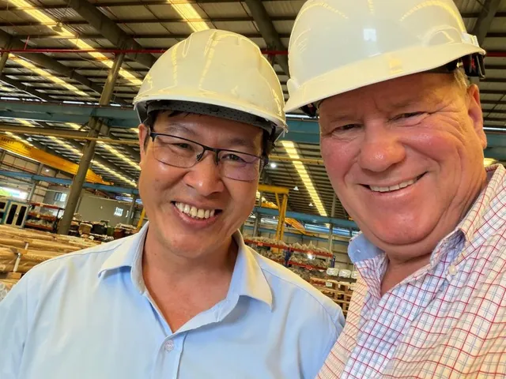
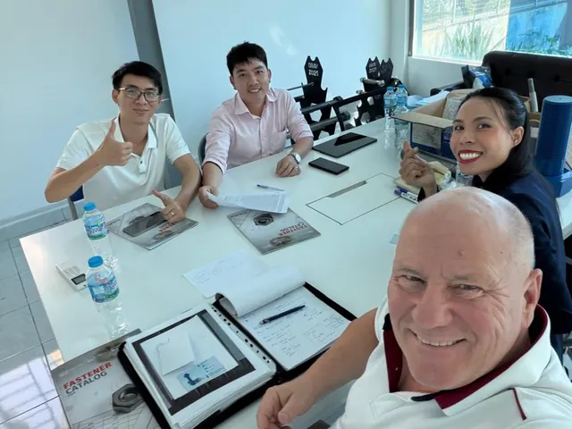
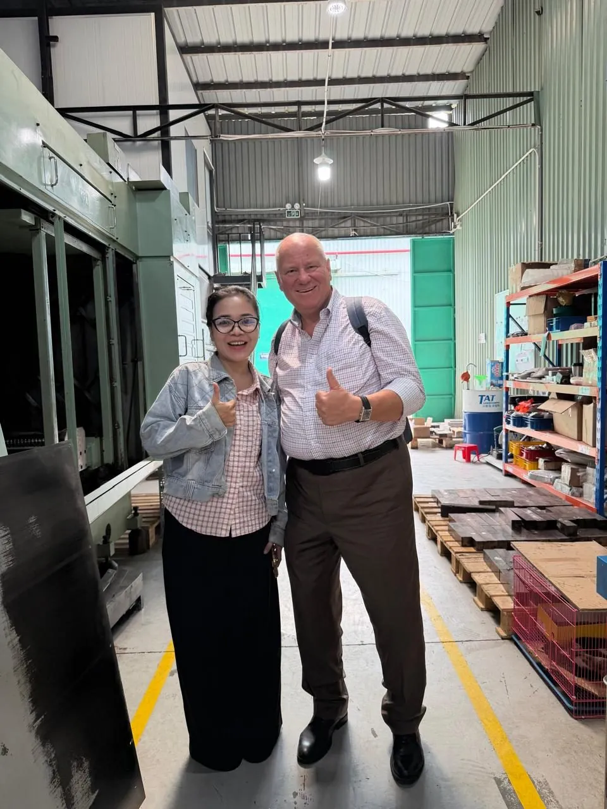
SwissTech pairs Swiss customer focus and technical understanding with hands-on operational support in Vietnam.SwissTech vereint Schweizer Kundennähe und technisches Verständnis mit operativer Unterstützung vor Ort in Vietnam.
ContactKontakt
Postal address (also for goods and samples):Postadresse (auch für Waren- und Mustersendungen):
SwissTech Precision SolutionsMarco G. Walser
Wolleraustrasse 41A
CH-8807 Freienbach
Switzerland
Email:E-Mail: marco@stps.ch
Request a QuoteAngebot anfragen → (opens your email program) (öffnet Ihr E-Mail-Programm)